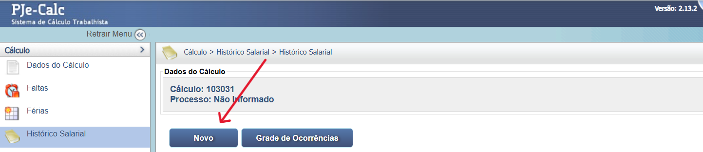
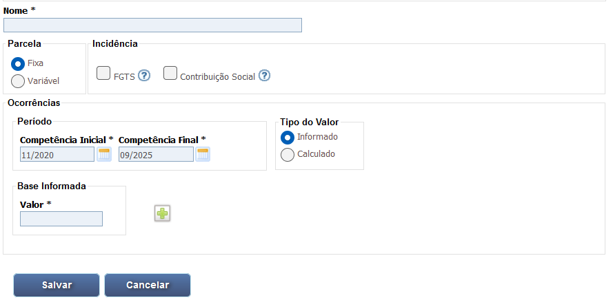
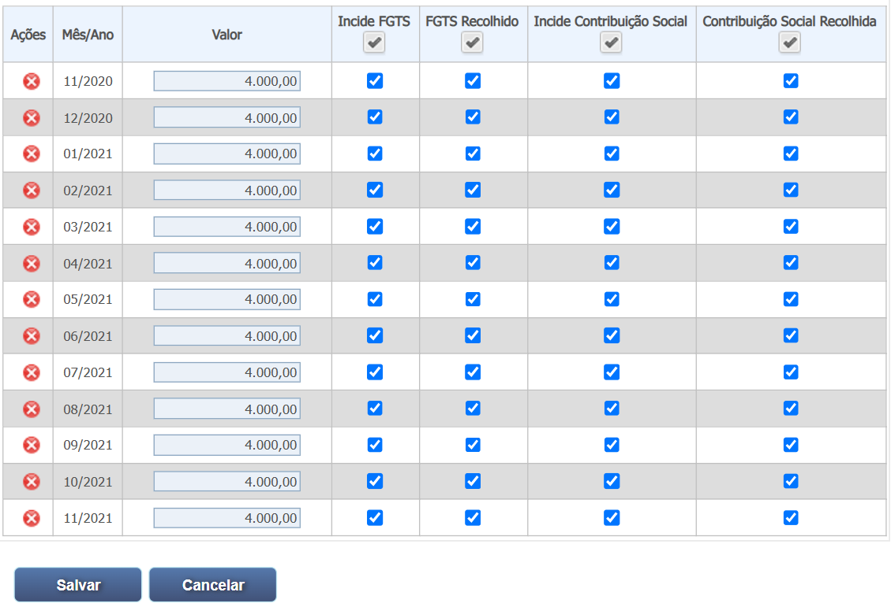
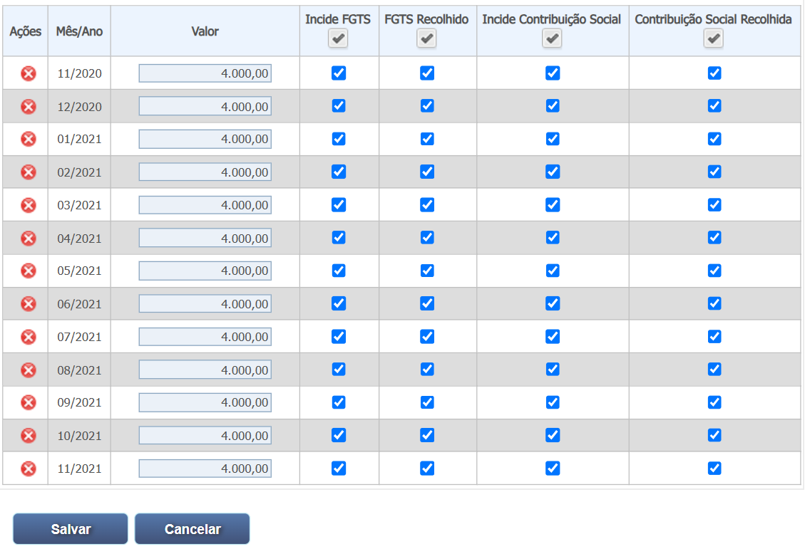
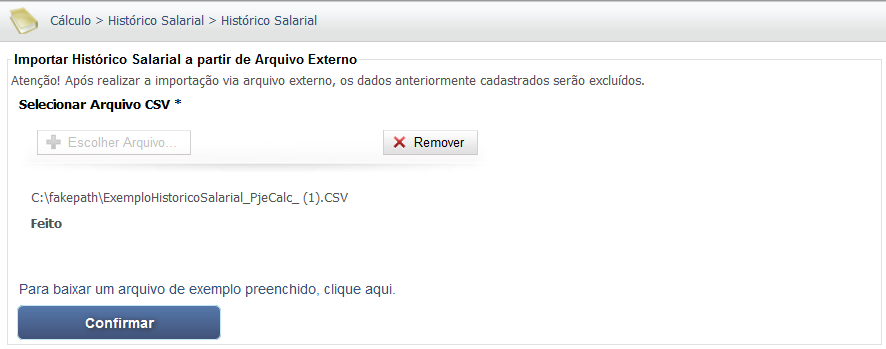
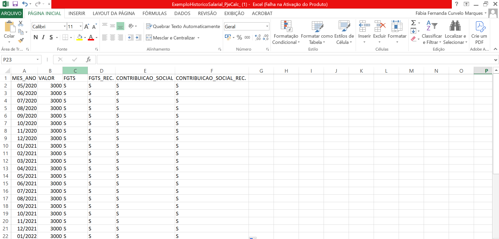
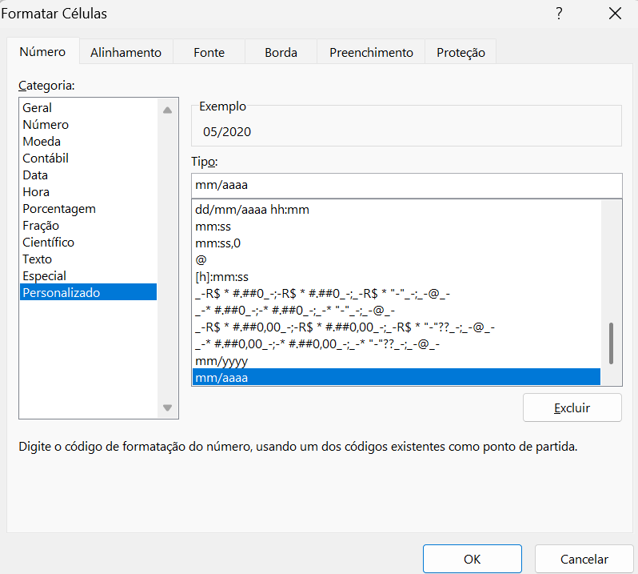
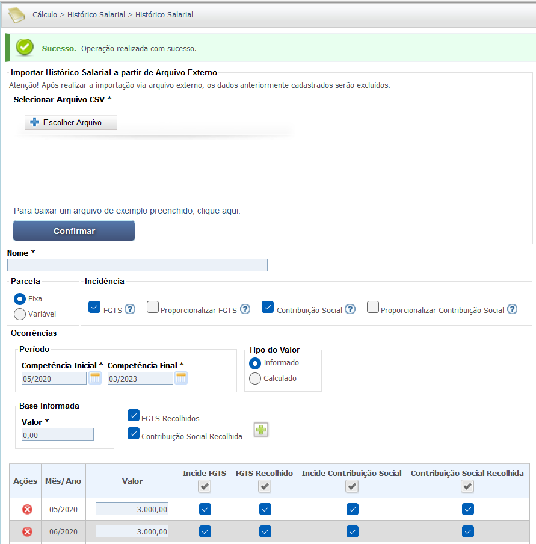
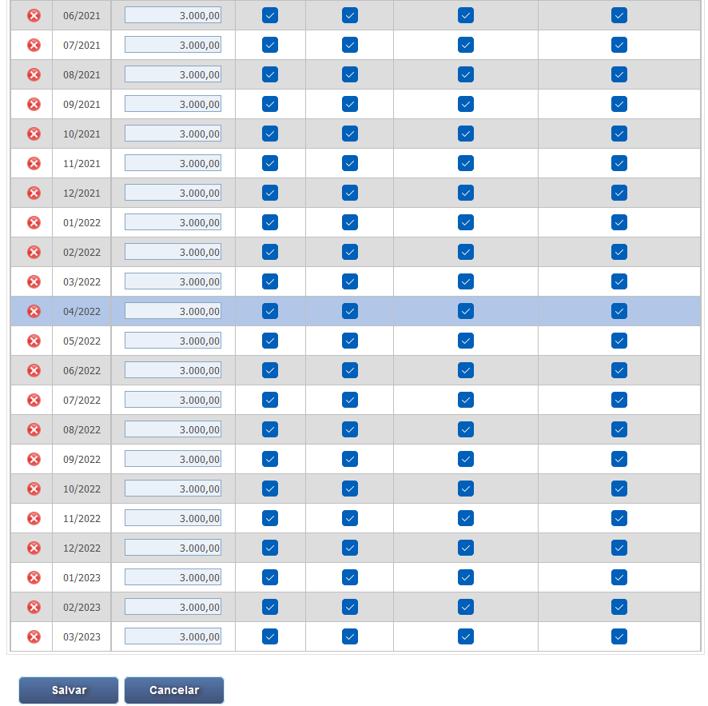

Manual Interativo de Cálculos Trabalhistas
Um guia completo e interativo para entender os cálculos na esfera judicial trabalhista.
8.1. Liquidação das Verbas Trabalhistas
A tela inicial do PJe-Calc Cidadão oferece as opções de Criar Novo Cálculo, Buscar Cálculo existente ou Importar Cálculo. O menu lateral exibe todas as etapas do processo de liquidação, como Dados do Cálculo, Faltas, Histórico Salarial e Verbas.

A configuração inicial do cálculo é feita na tela "Dados do Cálculo", que é dividida em "Dados do Processo" e "Parâmetros do Cálculo". É nesta etapa que se define o reclamante, reclamado, o período contratual (admissão/demissão) e os critérios de apuração, como prescrição e aviso prévio. (Cálculo Nº 33).
Dados do Processo

Parâmetros do Cálculo

A tela "Faltas" permite o registro manual de ausências ou a importação de um arquivo CSV externo. É possível indicar a data inicial e final da falta, se ela foi justificada e se deve reiniciar o Período Aquisitivo de Férias.


A tela de Cartão de Ponto permite o lançamento ou a importação da jornada de trabalho para fins de apuração de horas extras, horas noturnas e intervalos.
As imagens abaixo demonstram o lançamento ou a importação da jornada de trabalho.
Geração do Cartão de Ponto

Parametrizações do Cartão de Ponto


Visualização/Alteração e Exclusão do Cartão de Ponto

Lançamento de Ocorrências

6. Formulário de Jornada Padrão

7. Importação de Arquivo de Ponto (CSV)

8. Apuração de Horas e Detalhes do Dia

9. Resumo do Cálculo e Totais

O Histórico Salarial é o registro detalhado e fundamental de toda a evolução remuneratória do empregado. É nesta seção que se cadastram todas as parcelas salariais — sejam elas pagas, devidas ou que necessitem de cálculo. Este registro permite ao usuário incluir tanto os valores que o empregado é credor (como um adicional noturno) quanto as parcelas em que o trabalhador é devedor (débitos). Essa etapa é crucial, pois os dados aqui inseridos formam a base de cálculo para a criação de futuras verbas e deduções no processo. Por exemplo, um adicional noturno registrado pode ser usado futuramente para deduzir um valor deferido em sentença.
Passo a Passo no PJe-Calc
As telas estão organizadas na sequência lógica de cadastro e visualização de uma nova parcela no sistema, com a separação das modalidades Manual e Automática.
1. Tela de Busca e Criação de Novo Histórico Salarial
A tela inicial exibe a lista de históricos já cadastrados e o botão para 'Novo', dando início ao cadastro da parcela.
2. Modalidades de Inserção de Dados e Incidências Iniciais
O sistema oferece duas modalidades principais para a inserção das informações:
- Lançamento Manual: O usuário insere, mês a mês, o valor de cada parcela no histórico salarial.
- Importação Automática: Os dados são inseridos por meio de um arquivo formatado na extensão .CSV, compatível com planilhas eletrônicas.
3. Tela de Cadastro de Nova Parcela (Valor Informado)
Esta tela exibe o formulário inicial para o cadastro manual de uma nova parcela com o Tipo do Valor Informado.
4. Seleção de Nome da Parcela
O próximo passo é digitar o Nome da parcela ou selecionar um item na lista de sugestões, definindo a incidência inicial. As verbas abaixo são as já existentes no sistema. Caso a verba desejada não esteja na lista, o usuário deve incluir o nome da nova verba diretamente no campo e, após salvar, ela estará disponível para o cálculo.
- Adicional de Horas Extras Pagas
- Adicional de Insalubridade Pago
- Adicional de Periculosidade Pago
- Adicional de Risco Pago
- Adicional de Sobreaviso Pago
- Adicional de Transferência Pago
- Adicional Noturno Pago
- Adicional de Tempo de Serviço Pago
- Anuênio Pago
- Comissões Pagas
- Diárias Pagas
- Gorjetas Pagas
- Gratificação de Função
- Gratificação por Tempo de Serviço Pago
- Horas Extras Pagas
- Intervalo Interjornada Pago
- Intervalo Intrajornada Pago
- Quinquênio Pago
- Salário Base
- Salário Devido
- Salário Pago
- Soldada Base
- Soldo
- Triênio Pago
- Vencimento
5. Parcela com Tipo de Valor Informado (Salário Base)
Exemplo de cadastro para o "SALÁRIO BASE" quando o valor é informado (R$ 4.000,00) fixamente. Após preencher o valor e o período, clique em "Gerar Ocorrências".
 

6. Parcela com Tipo de Valor Calculado (Salário Mínimo)
Exemplo de cadastro onde o valor é Calculado com base em uma referência, como 1 Salário Mínimo. A imagem demonstra a configuração da base de cálculo e a grade gerada com os valores variáveis do Salário Mínimo.
7. Grade de Lançamento das Parcelas
Visão da grade de ocorrências das parcelas, que pode ser gerada tanto por lançamento manual quanto pela importação de dados.
8. Procedimento de Importação de Arquivo CSV
Para lançar grandes volumes de dados, utiliza-se a opção de importação. A planilha deve estar em formato .CSV e seguir um padrão de colunas específico do PJe-Calc.
Estrutura da Planilha de Importação
A planilha deve conter o Mês/Ano e indicar as incidências (S para Sim, como em FGTS e Contribuição Social).
Configuração da Célula de Mês/Ano
É essencial que a coluna de Mês/Ano na planilha Excel esteja formatada como Personalizado no formato "mm/aaaa".
Confirmação de Importação
Após selecionar o arquivo e clicar em "Confirmar", a importação será realizada, e os dados preencherão a grade do histórico salarial.
9. Telas de Detalhamento e Ocorrências da Parcela (Complementares)
Telas que detalham o resultado do lançamento (manual ou importado) e a visualização das incidências por competência.
Tela de Cadastro de Parcela (Valor Informado - Grade Detalhada)
 A opção "ÚLTIMA REMUNERAÇÃO" é preenchida automaticamente pelo sistema ao importar o Histórico Salarial a partir dos parâmetros de cálculo (Maiores Remunerações/Última Remuneração).
10. Visualização da "ÚLTIMA REMUNERAÇÃO" na Grade Principal
Após a importação automática, a verba "ÚLTIMA REMUNERAÇÃO" (R$ 5.000,00) aparece na grade de Históricos Salariais, conforme definido na tela de Parâmetros do Cálculo (Tópico 8.1.2).

11. Tela de Detalhamento da Parcela "ÚLTIMA REMUNERAÇÃO"
Ao acessar a verba, o sistema exibe os detalhes e a grade de ocorrências com o valor fixo de R$ 5.000,00, mantendo as incidências definidas.

A tela de Verbas é onde se inicia o lançamento dos pedidos deferidos (Verbas Principais). O lançamento pode ser feito de forma Manual ou Expressa.
Opções de Lançamento e Regeração

Lançamento Expresso
O Lançamento Expresso permite a rápida seleção das Verbas Principais, como 13º Salário, Aviso Prévio, Férias + 1/3, Multa do Artigo 477 da CLT e Saldo de Salário.

Resumo das Verbas Lançadas
A tela de verbas mostra o resumo das verbas principais (13º Salário, Aviso Prévio, Férias + 1/3, Multa do Artigo 477 da CLT, Saldo de Salário) que foram lançadas para o cálculo (Nº 33).

8.1.7.1. Custas Judiciais
As telas de Custas Judiciais (Custas Devidas e Custas Recolhidas) permitem o registro dos valores de custas devidas (2% sobre a liquidação, atos processuais, recursos, etc.) e os valores já recolhidos, para apuração de eventual diferença a ser paga/restituída.


8.1.7.2. Correção, Juros e Multa
As telas de Correção, Juros e Multa (Dados Gerais e Dados Específicos) permitem a configuração detalhada dos índices de correção monetária e juros de mora aplicáveis aos créditos trabalhistas, previdenciários e ao FGTS.


A tela de liquidação permite configurar a data (31/10/2025) e o critério de acumulação dos índices de correção monetária, iniciando a partir do mês subsequente ao vencimento das verbas.

A impressão é configurada no menu Imprimir, com a seleção de todos os relatórios necessários para a juntada ao processo judicial.

As páginas impressas detalham o resumo da liquidação, o critério legal, os dados do cálculo, o histórico salarial, o demonstrativo individual de cada verba, as deduções (INSS, IR) e as custas judiciais.